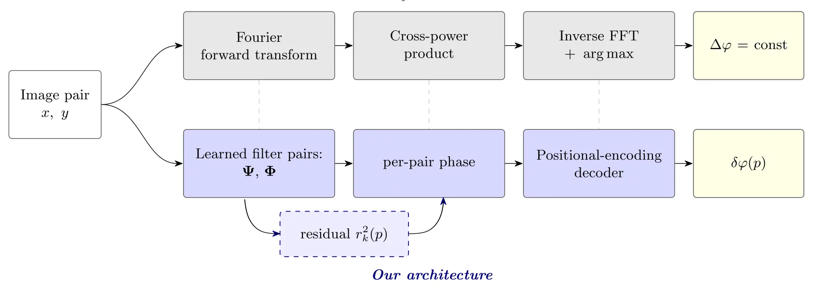
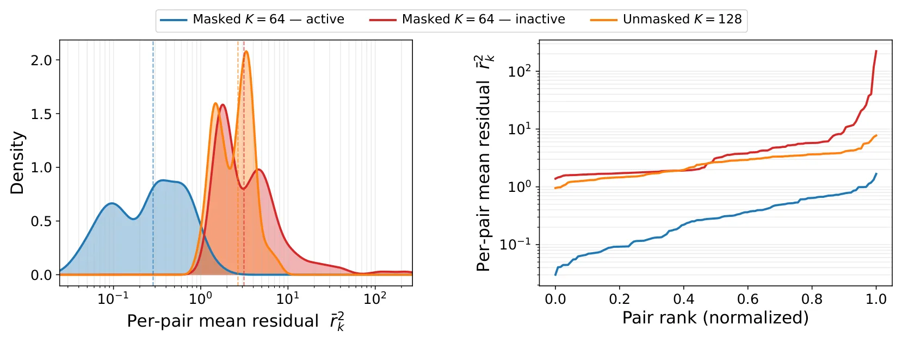
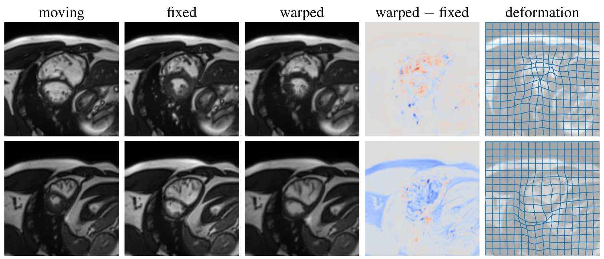
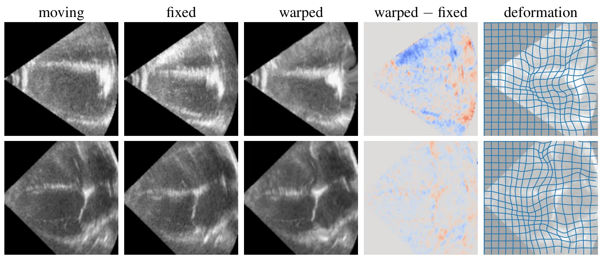
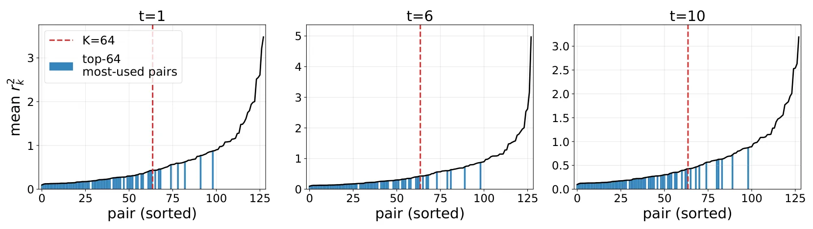
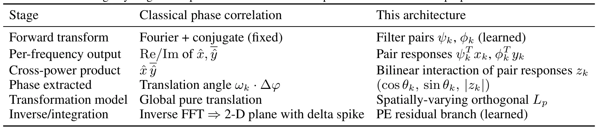
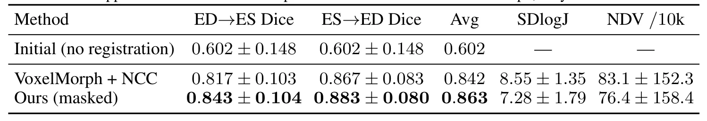
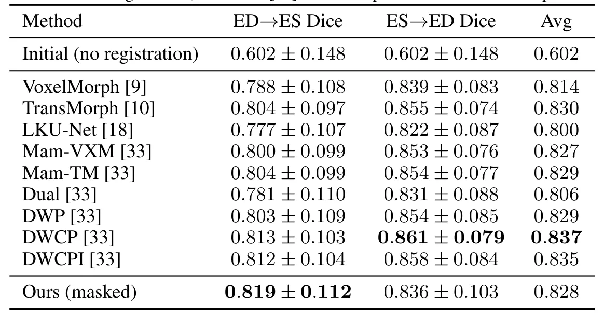
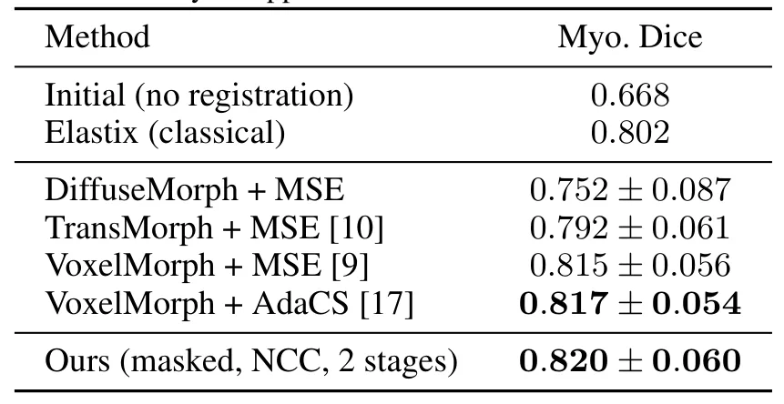

Neural Phase Correlation：神经相位相关Neural Phase Correlation
验证主要在医学配准，但思想对视觉前端、稠密对应、光流和配准优化有启发；需进一步观察是否能迁移到几何视觉/SLAM。
一句话工作总结
Neural Phase Correlation 学习用于分解变换的 basis，把图像间关系显式建模为一等对象，可用于非刚性配准和一般对应估计。
摘要
对应关系本质上是关系式的：它寻找两个共同场景观测之间未知的变换，而不是任一观测本身的内容。主流学习方法常分别编码每幅图像，再让相似度函数或深度解码器隐式发现映射；传统 phase correlation 则直接在 Fourier 域测量图像间关系，但固定基限制其主要适用于全局平移。本文提出 phase correlation 的学习式泛化，通过学习变换分解所依赖的 basis，突破固定 Fourier basis 限制。同一代数原语可扩展到稠密非刚性形变和 unitary dynamics。在 ACDC 心脏 MRI benchmark 上，该框架在两个配准方向达到或超过已有公开基线；在 CAMUS 超声心动图上无需额外评分或 adaptive-smoothness 机制即可匹配 SOTA；在一维量子谐振子观测对上还能恢复未知哈密顿量的 Hermite-function eigenstates 与量子化能级。
Correspondence is fundamentally relational: it seeks the unknown transformation between two observations of a common scene, not the content of either. Yet the dominant learning-based methods do not represent the transformation as a first-class object in the architecture. They encode each image independently and let a learned similarity function or a deep decoder discover the mapping implicitly. Phase correlation is the canonical exception, measuring the inter-image relationship directly in the Fourier domain, but the rigidity of its fixed basis confines it to global translation. We introduce a learned generalization of phase correlation that lifts this restriction by learning the basis on which the transformation decomposes. The same algebraic primitive extends to dense non-rigid deformations and to unitary dynamics. On the ACDC cardiac-MRI benchmark the framework matches or exceeds prior published baselines on both registration directions. On CAMUS echocardiography it matches state-of-the-art without auxiliary scoring or adaptive-smoothness mechanisms. Applied to time-evolved wavefunction pairs of the 1-D quantum harmonic oscillator, the same framework recovers the Hermite-function eigenstates and the quantized energy levels of the unknown Hamiltonian from observation pairs alone.
中文解读摘录
- 链接：abs / PDF；作者：Cole Reynolds；类别：cs.CV, cs.AI；采集 score=5。
- 核心思路：把传统 phase correlation 从固定 Fourier basis 的全局平移估计扩展成可学习 basis 上的关系建模，直接表示两幅观测之间的变换，可覆盖稠密非刚性形变与 unitary dynamics。
- 方法要点：在 ACDC 心脏 MRI、CAMUS 超声心动图配准上达到或接近 SOTA；同一框架还能从量子谐振子观测对中恢复 Hermite eigenstates 与能级。
- 关注点：医学数据验证较多，但“把变换关系作为一等对象”对图像配准、光流、稠密对应和视觉前端仍有启发；建议关注是否可扩展到 SE(2)/SE(3)、单应/极几何或多视图匹配。
图表/页面预览

{kind=link}

{kind=link}

{kind=link}

{kind=link}

{kind=link}

{kind=link}

{kind=link}

{kind=link}

{kind=link}
